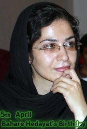

|
|
|
Browsing
Contact Us |
Campaigners |
Face to Face |
Tribune |
Interview |
News |
On the Web |
One Million |
Report
Farsi | Français | German | Italian | Spanish | العربية Also in this section
|
 In Commemoration of Bahareh’s 30th Birthday and Anniversary on April 5 Launch of Campaign to Free Bahareh HedayatSunday 27 March 2011 Change for Equality: A group of student, women’s rights and human rights activists have launched a Campaign to bring attention to the situation of imprisoned activist, Bahareh Hedayat, on the occasion of her 30th Birthday and wedding anniversary. The statement launching the Campaign appears below: Campaign to Free Bahareh Hedayat "We have been pressured and pummeled but have neither broken nor bent. We have stood firmly, but with anxious and broken hearts, we have witnessed the plunder and despotic destruction of a flower pot for which our predecessors and us have toiled and labored to see its growth and flourishing." (Message from Bahareh, on the occasion of December 7, 2010, National Student Day in Iran). Bahareh Hedayat, born on April 5th 1981, is a women’s rights and student activist. She has served as a member of the Central Council of Daftar-e Takhim-e Vahdat (Office for Consolidating Unity), Iran’s pro-democracy student movement, and was active in the One Million Signatures Campaign that seeks to end legal discrimination against women. Around midnight on December 31, 2009, after the contested elections, Bahereh was arrested by the Intelligence Ministry of Iran for the fifth time over the past four years and taken to unit 209 of Evin Prison. As such, she was met with one of the harshest punishments ordered against the student activist movement over the recent years. She received a sentence of 9 ½ years for participating in legal, peaceful and civil society activities undertaken by the Daftar-e Takhim-Vahdat and for challenging the existing discriminatory laws against women. Prior to this latest arrest, Bahareh Hedayat was arrested on four other occasions: During participation in the June 12, 2006 demonstrations, on July 9, 2007 at the sit-in of the members of the Office for Consolidating Unity in front of Amir Kabir University, in the summer of 2008 at her father’s house, and during the 2009 new year commemorations in front of the Evin Prison. While serving her current sentence in the Evin Prison, Bahareh published a statement in honor of the “Day of the Student.” Because of this act, Bahareh was again called to the municipal court and faced new charges. From the moment of her arrest on December 31st 2009, she has been deprived of temporary leave from the prison, and over the past three months her weekly visitation rights and phone privileges have been revoked. Over the past three years, this brave and unremitting activist has spent Naw Ruz (the Iranian New Year) behind bars. The injustices and oppression inflicted upon Bahareh are retaliation for her activism as a university student. Bahareh Hedayat, as a representative of the student activist movement in Iran, has received one of the heaviest and harshest judgments to date, and has been imprisoned for over one year under some of the most severe conditions in the methadone section of Evin Prison in Iran. We are a collection of students, women’s rights, and human rights activists who have come together to celebrate Bahareh’s birthday through an awareness campaign. In launching the Bahareh Campaign, it is our ardent hope to bring her plight to the attention of student associations, human rights organizations, and international decision makers. It is our belief that Bahareh Hedayat has become a prisoner because of her outspoken and fearless objections to the human rights conditions in Iran. As such we call for her immediate release. The Bahareh Campaign will continue its activities and efforts until the day Bahareh is released from prison. The Bahareh Campaign has planned series of activities and programs which call for your support, assistance, and immediate action: * Submission of stories about Bahareh or for Bahareh which will be published on the websites of numerous student association, women’s rights organizations, and human rights organizations. * Creation and publication of posters or short (one minute) videos to wish Bahareh well on her birthday and her one year wedding anniversary. These videos will be published on the Facebook page dedicated to her and on other related websites. * The distribution and signing of the Free Bahareh Hedayat Petition. * In remembrance of Bahareh Hedayat, who is the spring of the student activist movement in Iran, and in honor of her birthday, Iranian students residing outside of Iran are being called upon to hold tree planting ceremonies on their respective campuses. These plans and ceremonies are currently being pursued in a number of cities and on a number of campuses. For more information please contact us via email or Facebook at the following addresses: Bahar Campaign: birthdaybahar@gmail.com |